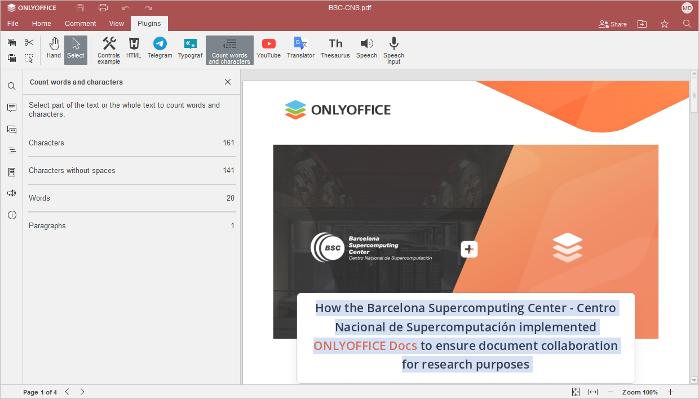

Brojanje reči
Da biste znali tačan broj reči i znakova (sa i bez razmaka), kao i ukupan broj pasusa u dokumentu, koristite Word Counter plugin.
Počevši od ONLYOFFICE Docs 8.2, nijedan plugin ne dolazi sa uređivačima po podrazumevanim podešavanjima. Plugin-ovi će biti instalirani putem Plugin Manager.
- Otvorite Plugins karticu i kliknite Izbroji reči i karaktere.
- Izaberite tekst.
Molimo imajte u vidu da sledeći elementi nisu uključeni u broj reči:
- simboli fusnota/endnota,
- brojevi iz numerisanih lista,
- brojevi stranica.

Za više informacija o Word Counter plugin-u i instalaciji, molimo pogledajte stranicu plugin-a u AppDirectory.